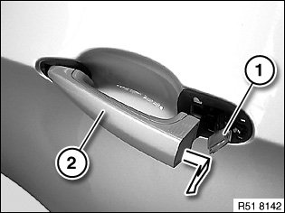
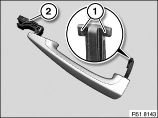
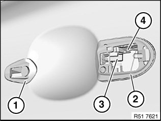

51 21 170 Removing and Installing or Replacing Outside Door Handle From Left or Right Front Door
51 21 170 Removing and installing or replacing outside door handle from left or right front door

Necessary preliminary tasks:
- Remove cover on outside door handle

If necessary, lay outside door handle light (1) slightly to one side.
Pull out outside door handle (2) and feed out in direction of arrow.
Version with Comfort Access/CA:
Carefully feed out outside door handle (2) and disconnect associated plug connection.

Installation:
Locator (1) must not be damaged.
Version with Comfort Access/CA:
Seal (2) must not be damaged.

Installation:
Seals (1 and 2) must not be damaged.
If necessary, pull lock actuator (3) outward until it engages retaining clasp (4).
Install outside handle and insert correctly into lock actuator (3).
Outside handle is in the correct position only after the cover has been fitted on the outside handle.
Carry out function check only with door open.

If replacing version with Comfort Access/CA:
Reset CAS control unit with diagnosis system or by disconnecting and connecting battery.